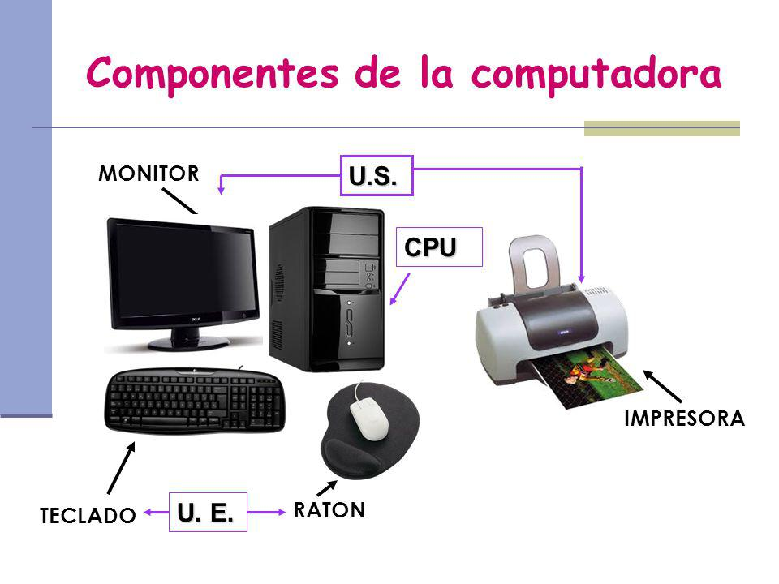

La Computadora
¿Qué es una Computadora?
12 de mayo del 2019

Una computadora es un dispositivo informático que es capaz de recibir, almacenar y procesar información de una forma útil. Una computadora está programada para realizar operaciones lógicas o aritméticas de forma automática.
Esta palabra se utiliza en la mayoría de países de Hispanoamérica, aunque en Chile y en Colombia es más común en masculino ('computador').En España se usa más el término 'ordenador' (del francés ordinateur). 'Computadora' procede del inglés computer y a su vez de latín computare('calcular').
Partes de una computadora
Los elementos básicos de una computadora son la memoria (RAM y ROM), la tarjeta madre, el procesador, microprocesador o CPU (siglas en inglés para el concepto de 'unidad central de procesamiento', compuesta a su vez por la unidad de control y la unidad aritmético lógica) y los dispositivos de entrada y salida. Estos dispositivos auxiliares o periféricos son variados. Algunos de ellos son: el disco duro, el monitor, el ratón, el teclado, la impresora o los altavoces.
